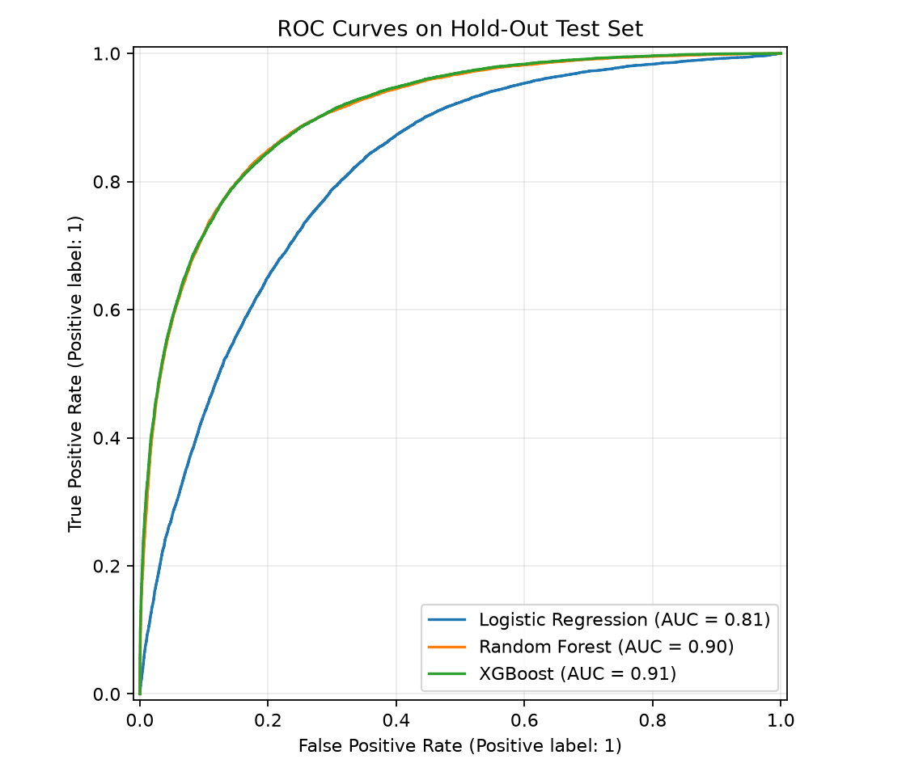
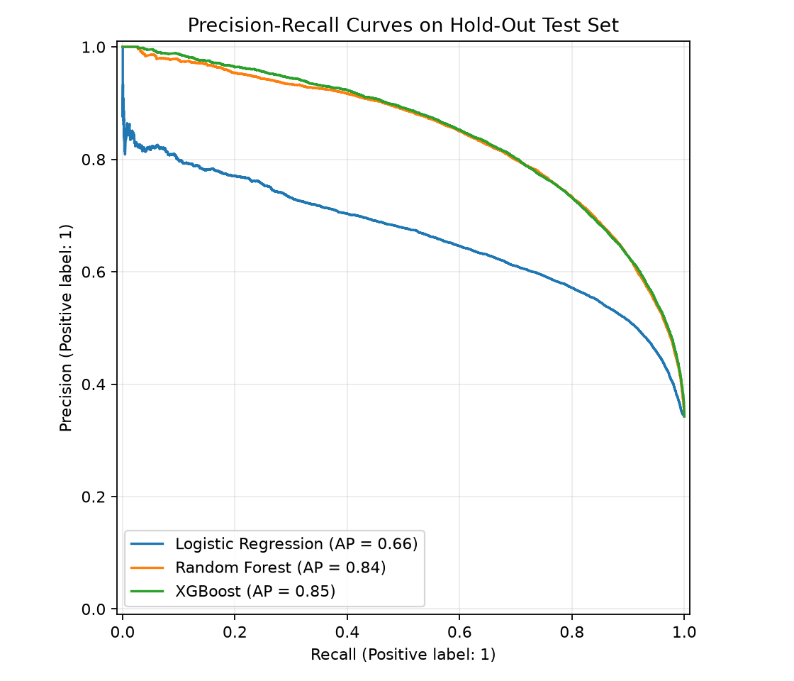
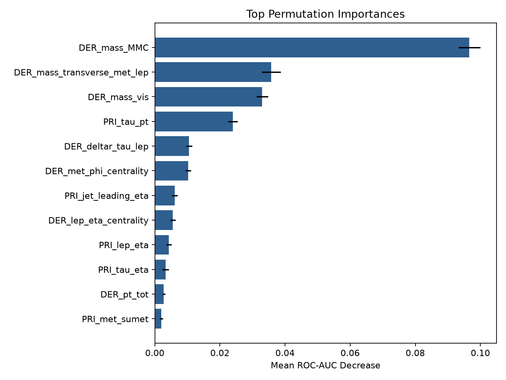
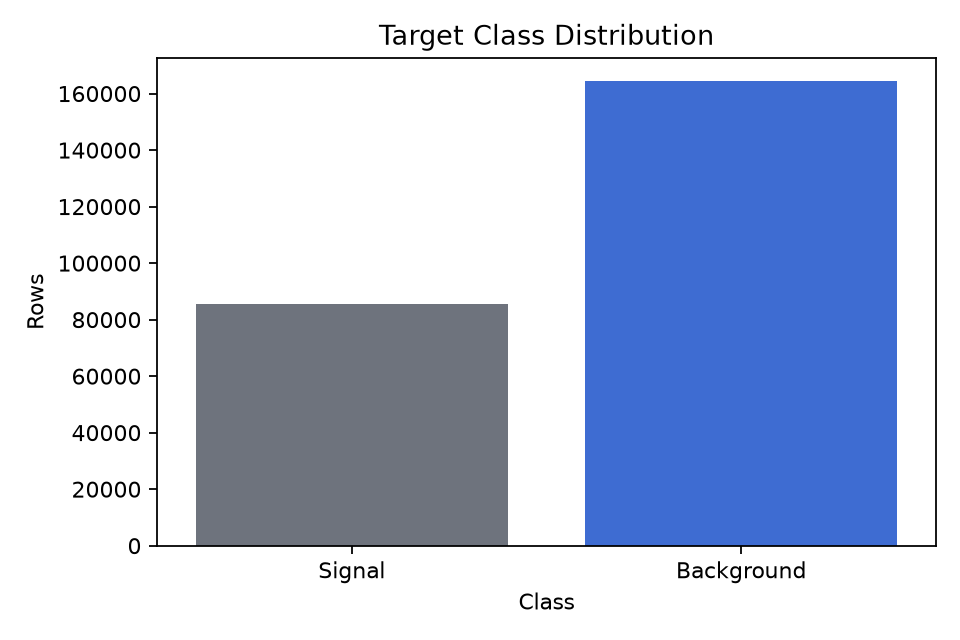

Reproducible pipeline
All training logic lives in src/higgs_pipeline.py, with a notebook wrapper for review.
This project turns the Kaggle Higgs Boson Machine Learning Challenge into a reproducible supervised learning pipeline. It compares logistic regression, random forest, and XGBoost, then explains the selected model with validation metrics and permutation importance.
The Higgs challenge asks whether a simulated particle collision event is signal, meaning consistent with Higgs boson production, or background. The pipeline handles the original Kaggle feature format, converts the -999 sentinel values to missing values, imputes and scales numeric features, checks class imbalance, trains three classifiers, and reports hold-out plus cross-validation results.
All training logic lives in src/higgs_pipeline.py, with a notebook wrapper for review.
The Kaggle sentinel value -999 is converted to missing data before median imputation.
Metrics, cross-validation tables, model tuning JSON, and result plots are saved under outputs/real.
XGBoost produced the strongest baseline ROC-AUC and improved after grid search tuning.
| Model | Precision | Recall | F1 score | ROC-AUC |
|---|---|---|---|---|
| Tuned XGBoost | 0.7160 | 0.8260 | 0.7671 | 0.9093 |
| XGBoost baseline | 0.7078 | 0.8257 | 0.7622 | 0.9063 |
| Random Forest | 0.7654 | 0.7580 | 0.7617 | 0.9049 |
| Logistic Regression | 0.5884 | 0.7600 | 0.6633 | 0.8133 |
These are generated directly by the pipeline and committed as static artifacts so the GitHub Pages site can show the assignment output without rerunning training.

XGBoost and random forest both separate signal from background well, with XGBoost leading.

Shows signal detection tradeoffs under class imbalance.

DER_mass_MMC, DER_mass_transverse_met_lep, and DER_mass_vis carried the strongest model signal.

The dataset has more background than signal events, so sampling was applied inside training folds.
The real Kaggle CSV is intentionally excluded from git. Download it from Kaggle, place it at data/training.csv, then run the pipeline.
python3 -m venv .venv
.venv/bin/python -m pip install -r requirements.txt
kaggle competitions download -c higgs-boson -f training.csv.zip -p data
unzip data/training.csv.zip -d data
.venv/bin/python src/higgs_pipeline.py --data data/training.csv --output-dir outputs/real --cv-folds 3Higgs_Boson_Classification_Pipeline.ipynb explains the assignment workflow and loads generated plots.
src/higgs_pipeline.py contains preprocessing, training, evaluation, tuning, and plot generation.
outputs/real contains CSV metrics, tuning JSON, summary markdown, and chart images.
index.html and assets/styles.css provide the GitHub Pages explainer.